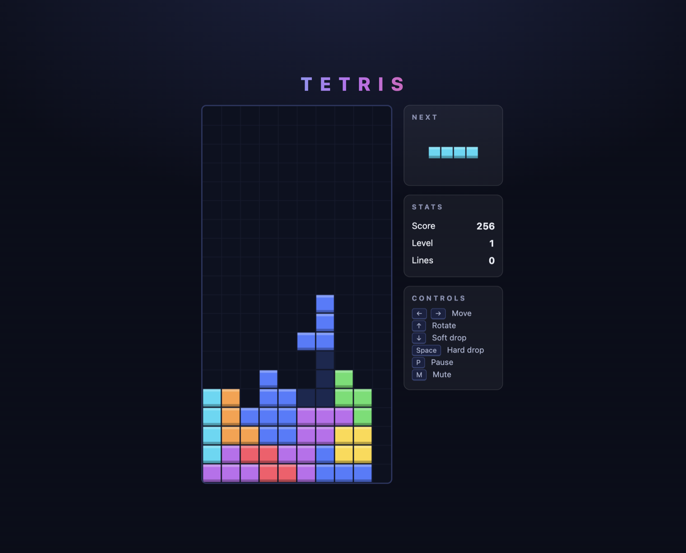

Field check · Pi coding agent · 29 August 2026
Running on Pi
Everything else on this site measures the server. This page is the first time we sat on the other end of the wire and asked it to build something: a coding agent, one prompt, and a playable game of Tetris four minutes later. Including the one way it failed first.
Benchmarks tell you how fast the tokens come out. They do not tell you whether an agent pointed at this box actually ships working code. So we connected Pi — a deliberately small coding agent whose whole prompt fits in about 2,000 tokens — to the 3090 server over Tailscale, and gave it a single instruction: build a complete, playable Tetris as one index.html, with controls, scoring, levels, a next-piece preview and a game-over screen.
Why Pi and not a bigger harness
Prompt size is the tax every agent pays on every turn, and on self-hosted hardware you feel it directly: reading the prompt is the slow part, not writing the answer. A heavyweight harness sends tens of thousands of tokens of system prompt and tool schemas before your request even starts. Pi sends a couple of thousand. Against a server you own, that difference is the difference between an agent that feels instant and one that spends its first minute reading its own instructions.
Wiring it up is one provider entry in Pi's models.json:
"remote-qwen": {
"baseUrl": "http://<server>:9000/v1",
"api": "openai-completions",
"compat": { "supportsDeveloperRole": false, "supportsReasoningEffort": false },
"models": [{
"id": "qwen3.8-27b",
"reasoning": true,
"contextWindow": 65536,
"maxTokens": 57344
}]
}Those last two numbers took a failed run to get right. More on that in a moment.
What happened
The model thought for a while, wrote the entire 17.7 KB file in a single tool call, and then did something we had not asked for: it extracted the <script> block from its own output and ran node --check on it to verify the syntax before reporting done. An agent that tests its own work, unprompted, on a card you bought secondhand.

And it is not a minimum-viable Tetris. Unasked, it added a 7-bag randomizer, DAS/ARR key auto-repeat, lock delay with capped resets, a ghost piece, wall kicks, WebAudio sound effects with a mute key, pause-on-blur, and floating score popups. The code itself is clean: a strict-mode IIFE, no globals, a delta-clamped animation loop.
spawn() pulls a fresh piece for both the board and the preview, so the preview never matches what you actually get. Thirty seconds of play reveals it. The model verified its syntax but never its behaviour: the same gap between compiles and works that the Aider numbers point at from the other direction. Give it the bug report and a feedback loop and it is exactly the kind of thing it fixes well.
The failure that came first
The first attempt produced nothing at all. No file, no error, no output — the process simply ended.
The session log showed why: the model emitted 104,838 characters of chain-of-thought and hit its 32,768-token output cap while still reasoning — stopReason: length, before a single tool call. It spent its final tokens deliberating whether to also create a test file that nobody had asked for. All plan, no artifact, and from the outside it looked like nothing happened.
max_tokens as far as the server allows — the cap here is max_model_len = 65536, total, prompt and output combined, so we settled on 57,344 with headroom for the prompt — and turn thinking off or low for build tasks. Also be explicit that the agent must call its write tool. The successful run came from the same model, same settings, and a prompt that said so.
What this adds to the picture
The Story page frames this model as a pair-programmer that needs a feedback loop, on the strength of 12.5% first-shot versus 48.7% with test feedback on Aider. This run is the anecdote that sits alongside those numbers: on a well-trodden problem it can one-shot something genuinely impressive — and still leave a behavioural bug that only running the thing would catch. The benchmark and the field test agree: wire it to a loop that executes what it writes.
Provenance. One run, one model, one prompt — an anecdote, not a benchmark. Client: Pi 0.84.2 (@earendil-works/pi-coding-agent) on a Mac over Tailscale. Server: the two-card stack described in Setup, vLLM fork 0.27.1, thinking level medium. The failed first run, the successful build and its tool calls are all in Pi's session logs; the game file was recovered byte-identical from the write-tool payload after a power cut, which is its own small argument for agents that log everything.